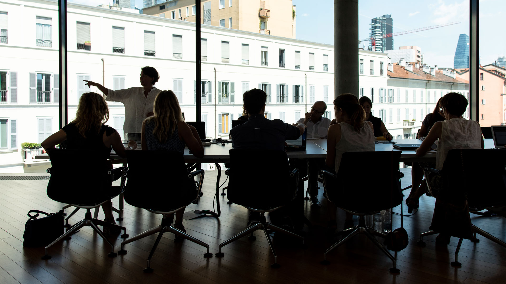
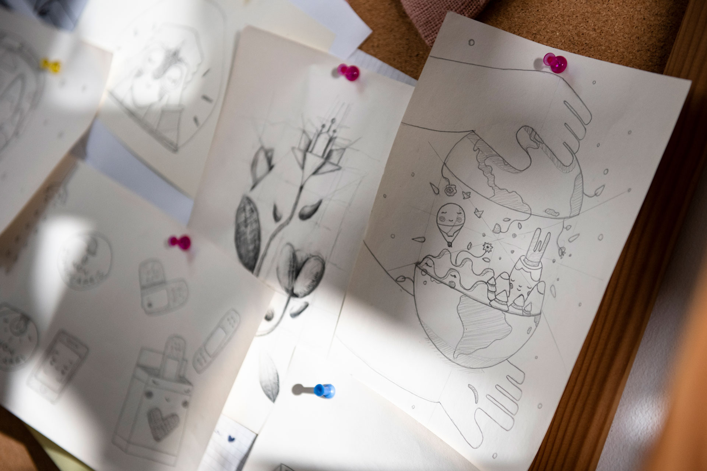
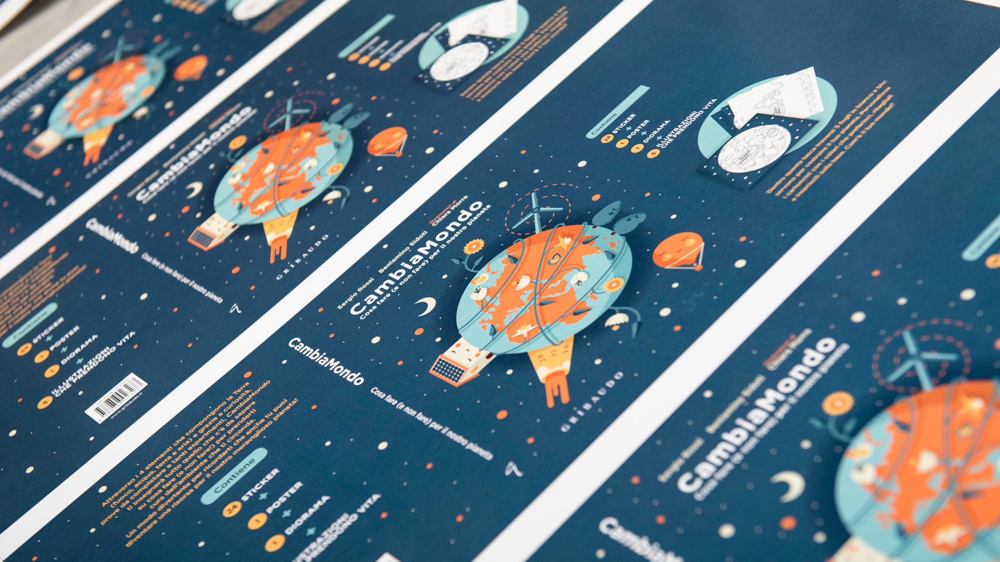
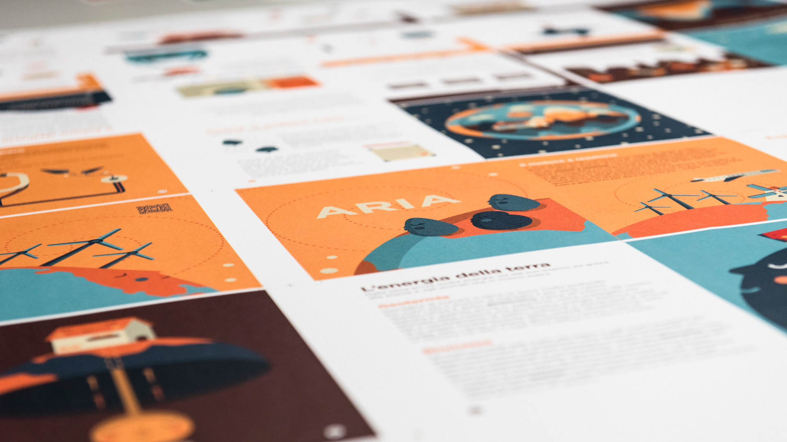
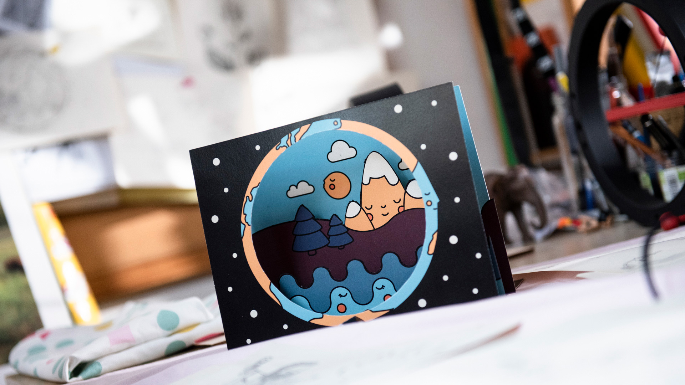
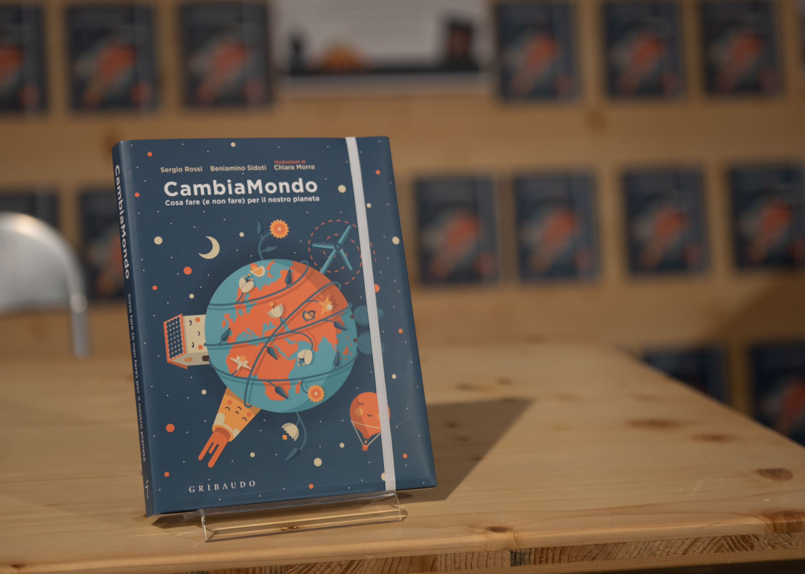
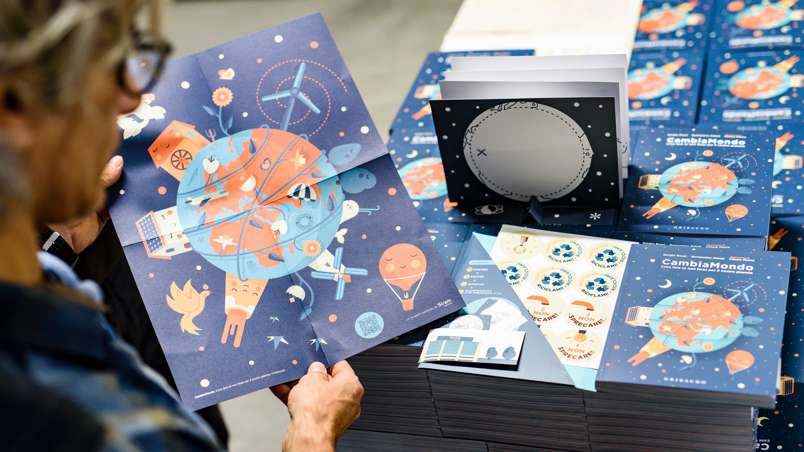

The assignment from Siram Veolia, leader in energy management solutions, was to help them create an educational project focused on sustainability targeted at the youngest generations.
Starting from Siram Veolia brand positioning and values, we supported them jn developing “Cambiamondo”: a multi-touchpoint educational project dedicated to 6-10-year-old kids.
“Cambiamondo” had the ambition of educating the new generations in building a more sustainable world through everyday actions. In January 2019 the first two steps of the project were launched: the book and the workshops.
Published by Gribaudo — IF — Idee Editoriali Feltrinelli, the book “Cambiamondo” includes scientific experiments, engaging artistic exercises, stickers, games, challenges and video animations, together with content on sustainability, specifically addressed to the main target.
After the launch of the book “Cambiambo” entered primary school classes with educational workshops where kids were involved in the building of a paper crafted house embedded with a mini solar panel that enabled a mini wind fan.
“Cambiamondo” had the ambition of educating the new generations in building a more sustainable world through everyday actions. In January 2019 the first two steps of the project were launched: the book and the workshops.
Published by Gribaudo — IF — Idee Editoriali Feltrinelli, the book “Cambiamondo” includes scientific experiments, engaging artistic exercises, stickers, games, challenges and video animations, together with content on sustainability, specifically addressed to the main target.
After the launch of the book “Cambiambo” entered primary school classes with educational workshops where kids were involved in the building of a paper crafted house embedded with a mini solar panel that enabled a mini wind fan.